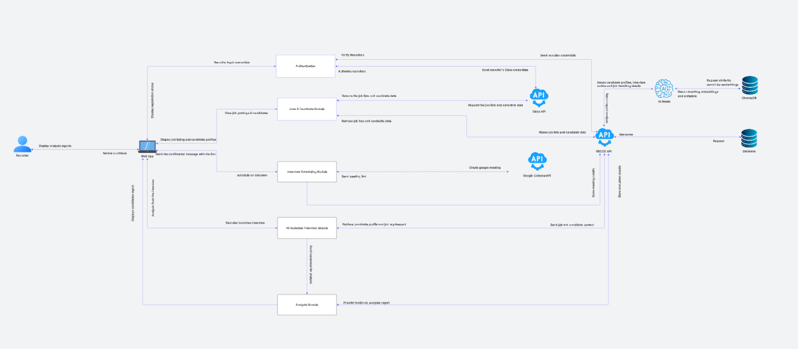
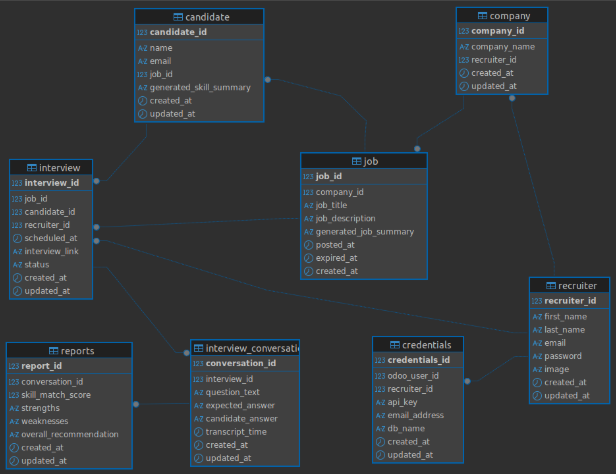

Developer Docs
Comprehensive documentation for developers building, testing, and deploying the Recos platform.
- Frontend: Next.js, Tailwind CSS, TypeScript (deployed on Vercel)
- Backend: Python, Django REST Framework
- Database: PostgreSQL
- Integrations: Odoo ATS, Google Calendar API, AssemblyAI, Gemini (AI analytics)
- CI/CD: GitHub Actions, Vercel
- Backend Deployment: Heroku (Django app)
- Backend Logs: Monitored via Heroku for error traces and debugging
System Architecture Overview

Database Schema

How Recos Platform Works
Recos is an AI-powered recruitment assistant designed to streamline hiring, increase accuracy, and support fair candidate assessment for recruiters.
The platform integrates deeply with Odoo ATS and leverages advanced AI for interviews, analytics, and reporting.
Platform Workflow
1. Recruiter Registration & Authentication
- Sign Up: Recruiters create an account using their first name, last name, email, and password.
- Login: After registration, recruiters log in with their credentials.
- Password Reset: If a recruiter forgets their password, they can request a reset. A code is sent to their email, allowing them to set a new password securely.
2. Odoo Integration & Account Verification
- After logging in, recruiters connect their Odoo account by providing:
- Odoo instance URL
- API key
- Credentials are verified directly with Odoo, ensuring secure access to candidate and job data.
3. Company Selection & Dashboard Access
- Recruiters are presented with a list of companies (fetched from Odoo) they are associated with.
- After selecting a company, the recruiter lands on the dashboard, where they can:
- View job postings for the selected company
- See candidates who have applied to those jobs
4. Candidate Profile Management
- For each candidate, Recos automatically generates a structured profile, including:
- Skills
- Qualifications
- Experience
- All candidate profiles are stored within the platform, making it easy for recruiters to review, search, and manage candidates efficiently.
5. Interview Scheduling
- Recruiters can schedule interviews by selecting a candidate and setting a date/time.
- The system generates and sends a Google Meet link to the candidate (via Google Calendar integration).
6. AI-Assisted Interview Process
- Pre-Interview Preparation:
The AI analyzes both the candidate’s CV/profile and the job description, building a knowledge base of required versus offered skills. - During the Interview:
- Recruiter and candidate join the interview via the Google Meet link.
- Recos AI transparently joins, with the recruiter signaling when to start.
- The AI dynamically generates tailored questions based on the candidate’s background and job requirements.
- It adapts in real-time, asking follow-up questions for deeper insights.
-
All speech is transcribed using Google Speech-to-Text AI.
-
Recos AI Add-on:
- The recruiter receives dynamically generated interview questions and prompts through the platform’s interface.
- Post-Interview Reporting:
- After the interview, Gemini AI generates a detailed report that:
- Summarizes how well the candidate demonstrated required skills
- Identifies strengths and gaps
- Provides actionable insights for decision-making
7. Odoo Data Sync
- Odoo serves as the trusted source for recruiter accounts, job descriptions, and CVs.
- The platform syncs candidate and job data with Odoo to ensure accuracy and timeliness.
Why Recos Is Valuable
- Saves recruiters’ time: Pre-validates candidate claims before the interview stage.
- Increases hiring accuracy: Reduces resume exaggeration or misrepresentation.
- Enables fairer assessments: Objectively tests practical and behavioral skills.
- Improves candidate matching: Ensures fit with role requirements based on actual demonstrated abilities.
Typical Recruiter Journey in Recos
- Sign Up → Login → Odoo Connect
- Select Company → Explore Jobs & Candidates
- Schedule Interview → AI-Assisted Interview → Candidate Report
- Data remains synced with Odoo for up-to-date profiles and job listings